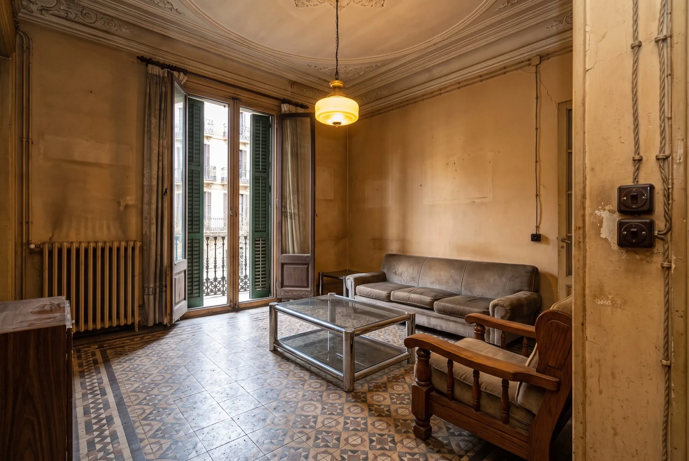
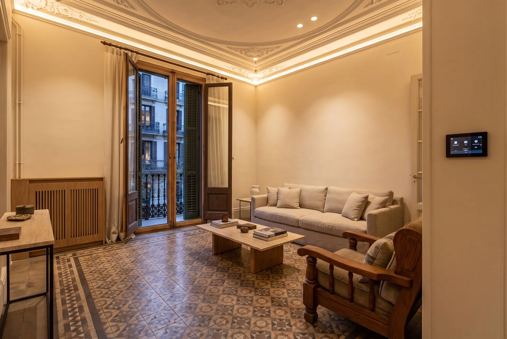
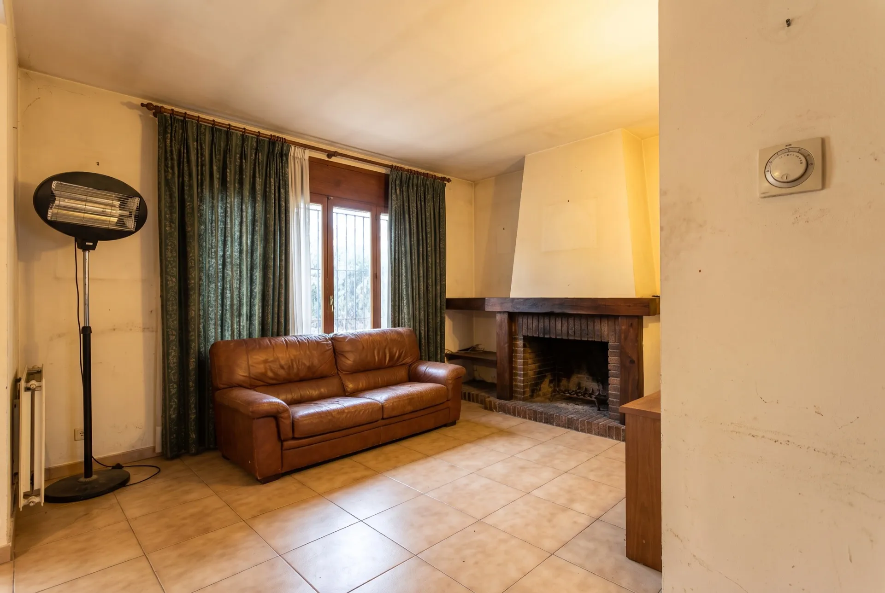
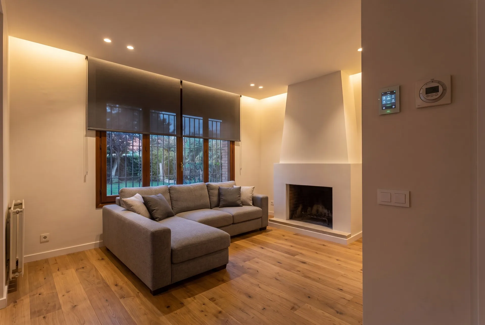
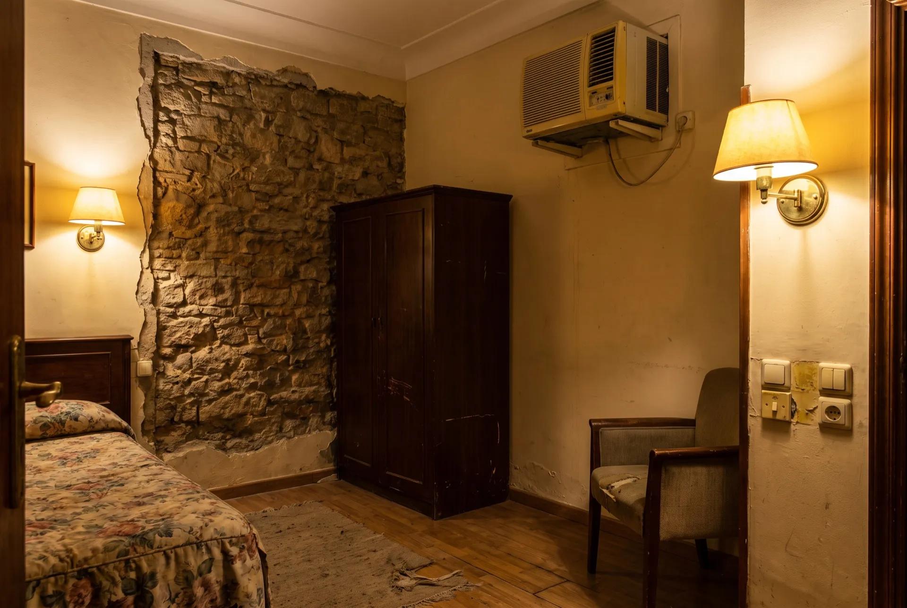
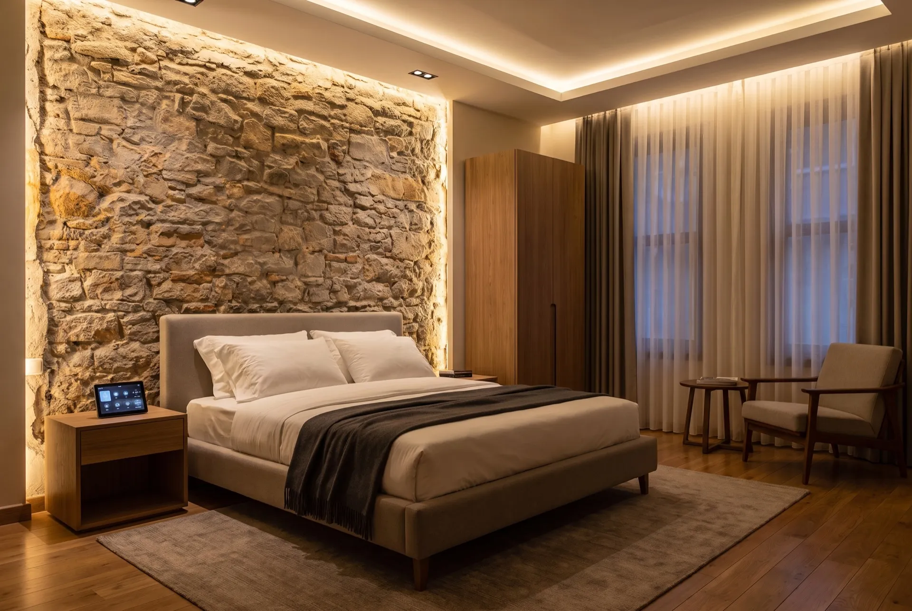
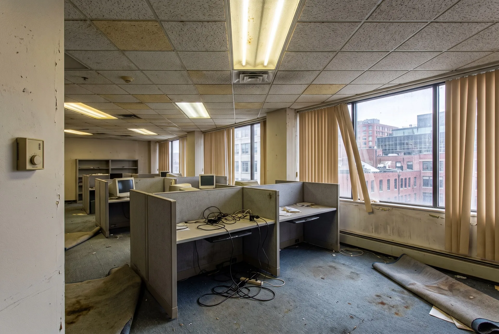
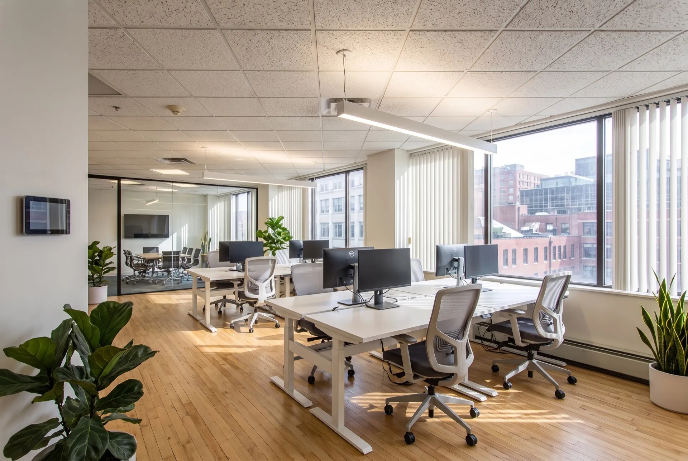

Una selecció d'instal·lacions en habitatges, hotels i oficines de Barcelona i rodalies. Llisca sobre cada imatge per comparar l'abans i el després.


Barcelona · Dreta de l'Eixample
Reforma integral d'un habitatge de 1912 amb terra hidràulic i motllures originals. Domòtica KNX cablejada integrada a la reforma: il·luminació per escenes, climatització per estances, persianes de llibret motoritzades i so multiroom.
Conservar el terra hidràulic i les motllures protegides: no es podia picar ni el terra ni el sostre original.
Canalització perimetral pel fals sostre al passadís i als banys, actuadors KNX centralitzats al quadre i mecanismes amb bus a les parets ja previstes per la reforma.
«Volíem tecnologia sense que es veiés tecnologia. Ningú diria que aquest pis de 1912 es controla des del mòbil.»


Sant Cugat del Vallès · zona Golf
Casa unifamiliar dels anys 90 actualitzada amb Loxone: calefacció per zones amb aerotèrmia, persianes i tendals amb sensor de vent, reg segons la meteorologia, control de piscina i alarma perimetral integrada.
Calderes i termòstats de 1994 que escalfaven tota la casa encara que només s'utilitzés el saló, i un jardí que es regava cada dia fins i tot plovent.
Miniserver Loxone amb 9 zones de climatització connectat a la nova aerotèrmia, electrovàlvules de reg per sectors amb estació meteorològica i automatització de piscina (depuració i coberta).
«La casa es gestiona sola: calefacció, reg, piscina, alarma. Nosaltres només gaudim. La factura d'hivern ho diu tot.»


Barcelona · Ciutat Vella
Hotel de 14 habitacions en un edifici del segle XVIII. Control4 a les habitacions i zones comunes: escena de benvinguda en entrar, climatització que es modera amb l'habitació buida, cortines motoritzades i panys electrònics integrats amb el PMS.
Murs de pedra de 60 cm sense possibilitat de canalitzar, i l'obligació de no tancar l'hotel durant la instal·lació.
Topologia sense fils Zigbee amb passarel·les Control4 per planta, instal·lació per fases de 3-4 habitacions aprofitant l'ocupació baixa entre setmana.
«Els hostes mencionen l'habitació "intel·ligent" a les ressenyes. I l'estalvi en climatització pagarà el sistema en uns tres anys.»


Barcelona · Poblenou, 22@
Planta d'oficines de 850 m² per a una consultora tecnològica. Il·luminació KNX + DALI circadiana que segueix la llum natural, sensors de presència i CO₂ per zones, climatització integrada amb el BMS de l'edifici i sales de reunions amb reserva i escenes audiovisuals.
Fluorescents de 2004 sempre encesos, sales climatitzades sense ningú a dins i queixes constants de confort de l'equip.
Substitució per lluminàries DALI regulades per KNX amb sensors multizona: la llum i la climatització segueixen l'ocupació real i el nivell de llum natural de la façana.
«El canvi en el confort va ser immediat i el consum d'il·luminació va caure a menys de la meitat. La mesura per zones ens permet afinar-lo cada mes.»
Explica'ns com és el teu habitatge o negoci i et proposem una solució a mida amb pressupost tancat.
Demana pressupost gratuïtSense compromís · Resposta en menys de 24 h · Visita tècnica gratuïta